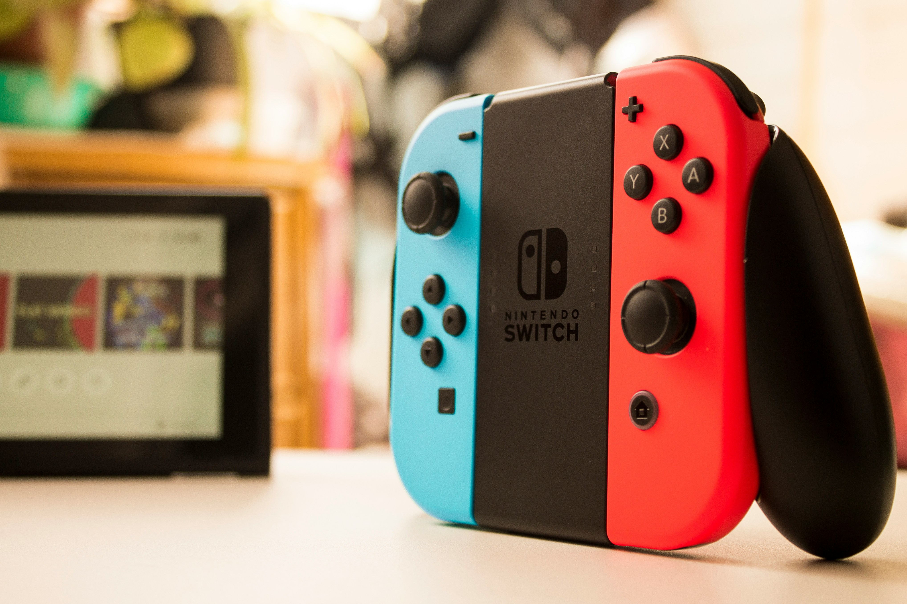

일본의 비디오 게임 기업. 1889년 화투패 장사를 시작으로 1977년의 컬러 TV 게임을 통해 본격적으로 비디오 게임 산업에 진출하였다. 현재는 일본을 넘어 게임 산업 자체를 대표하는 기업 중 하나이다.
경영 이념이 독특한 걸로 유명한데, 다른 회사에게는 흔히들 있는 경영 방침, 사훈, 사가(社歌) 같은 게 닌텐도에는 없다. 이에 대해 이와타 사토루 전 사장이 말하기를 "사훈 같은 게 있으면 일하는 사람들이 질려버린다." 라고 하였다.
독특한 경영 이념 외에도 게임이라는 매체에 대한 자신들만의 철학이 뚜렷하며, 그것을 외부 상황에 휘둘리지 않고 강하게 지켜나가는 편이다. 일례로 타 회사와 달리 닌텐도는 게임기를 전 연령층이 접근 가능한 '장난감' 내지는 '완구'의 개념으로 보고 있으며, 이에 맞물려 '게임기의 가격은 25,000엔을 넘어서는 안 된다.'라는 철학을 철저하게 고수해왔다.